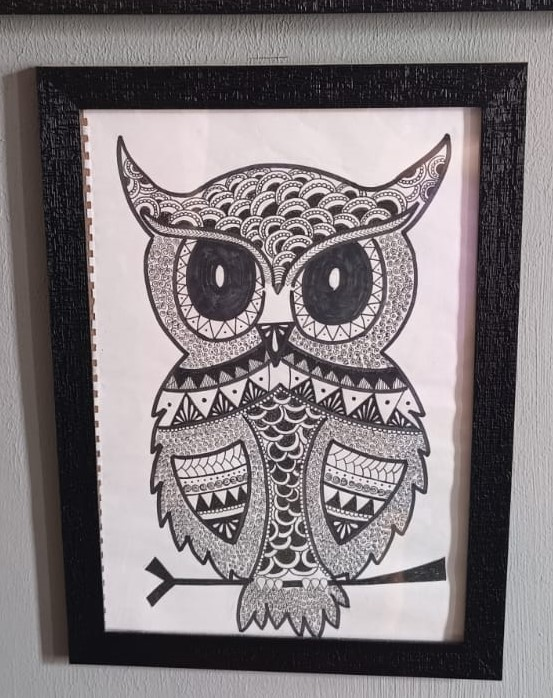

Wisdom in Ink

Perched in stillness, drawn in grace,
A thousand patterns fill her face.
Each feather inked with care and art,
A silent map of a mindful heart.
Eyes like moons—so round, so wide,
Holding secrets time can’t hide.
She doesn’t speak, yet seems to know
The hush of night, the drift of snow.
No splash of hue, no vibrant tone,
Just black on white—yet not alone.
For in those lines, so neatly spun,
Lies every dusk and every sun.
Each scale, each swirl, each silent thread,
Recites the words we’ve left unsaid.
Of quiet strength, of silent flight,
Of knowing wrong, and seeking right.
She perches still, both bold and wise,
A guardian drawn with steady eyes.
In every curve, a tale unfurled—
The ink-born watcher of the world.